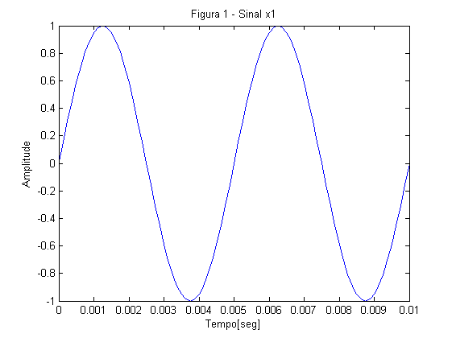
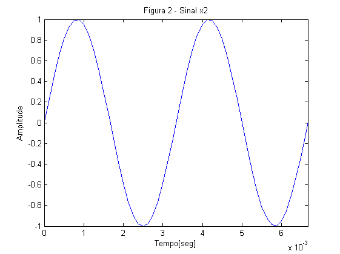
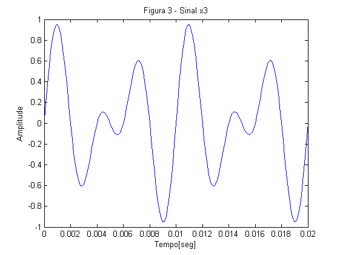
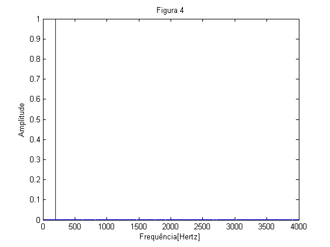
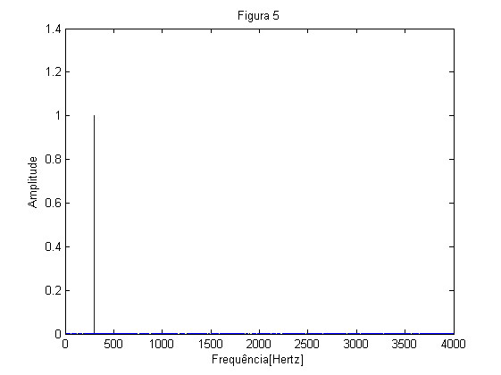
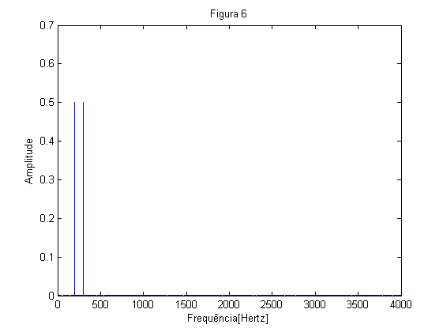
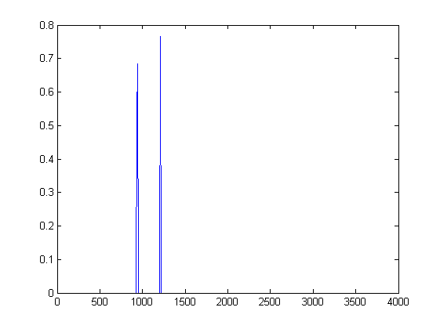

Contents
Exercício 1
N = 8000; Fs = 8000; t = (0:N-1)/Fs; x1 = sin(2*pi*200*t); x2 = sin(2*pi*300*t); x3 = 0.5*x1 + 0.5*x2;
Exercício 1.i)
figure(1); plot(t, x1); axis([0 2/200 -1 1]); xlabel('Tempo[seg]'); ylabel('Amplitude'); title('Figura 1 - Sinal x1'); figure(2); plot(t, x2); axis([0 2/300 -1 1]); xlabel('Tempo[seg]'); ylabel('Amplitude'); title('Figura 2 - Sinal x2'); 
Exercício 1.ii)
x1: tipo: frequência: f = 200 amplitude: 1 x2: tipo: frequência: f = 300 amplitude: 1
Exercício 1.iii)
sound(x1); sound(x2);
Da visualização dos sinais apercebemo-nos que o sinal x1 tem uma frequência mais baixa do que o sinal x2. Depois de ouvir ambos os sinais, podemos escutar que o sinal x1 é mais grave do que o sinal x2. Podemos assim concluir/provar que frequências mais baixas produzem sinais sonoros mais graves. (gráfico "constante"....)
Exercício 1.iv)
figure(3); plot(t,x3); axis([0 2/100 -1 1]); xlabel('Tempo[seg]'); ylabel('Amplitude'); title('Figura 3 - Sinal x3');
Exercício 1.v)
x3: tipo: frequência: f = 100 amplitude: 0.9511
Exercício 1.vi)
sound(x3);
Depois de ouvir o sinal x3 chegámos à conclusão que não basta a frenquêcia para definir um sinal (o que é óbvio), ou seja, apesar da frequência do sinal x3 ser mais baixa que a frenquência do sinal x1 (e daí esperarmos que o sinal x3 fosse mais grave), depois de escutar o sinal x3 com mais atenção percebemos que este é de facto uma espécie de junção de dois sinais distintos.
Exercício 1.vii)
Ao ouvir os três sinais apercebemo-nos que o sinal x3 é como que uma junção do som dos sinais x1 e x2, o que de facto é verdade, visto que x3 = 0.5*x1 + 0.5*x2.
Exercício 1.viii)
p = length(x1); freq = 0:Fs/p:Fs/2; [magnitude1,phase1] = fourierSeries(x1); figure(4); plot(freq, magnitude1); xlabel('Frequência[Hertz]'); ylabel('Amplitude'); title('Figura 4'); [magnitude2, phase2] = fourierSeries(x2); figure(5); plot(freq, magnitude2); xlabel('Frequência[Hertz]'); ylabel('Amplitude'); title('Figura 5'); [magnitude3, phase3] = fourierSeries(x3); figure(6); plot(freq, magnitude3); xlabel('Frequência[Hertz]'); ylabel('Amplitude'); title('Figura 6');  
As Figuras 4 e 5 (referentes aos sinais x1 e x2, respectivamente) têm um único valor: aproximadamente 200 e 300, enquanto que a Figura 6 (referente ao sinal x3) tem dois valores: aproximandamente 200e 300, o que nos leva a concluir que a função fourierSeries divide um sinal nas suas componentes e apresenta as frequências das mesmas.
Exercício 1.ix)
Exercício 2)
clear;
Exercício 2.i)
x = wavread('dtmf_1.wav'); char1=DTMF2num(x) y = wavread('dtmf_2.wav'); char2=DTMF2num(y) z = wavread('dtmf_3.wav'); char3=DTMF2num(z) % function z = DTMF2num(x) % [magnitude,phase] = fourierSeries(x); % [peaks,locs] = findpeaks(magnitude); % z=10; % if (locs(1) >= 69) && (locs(1) <= 71) % if (locs(2) >= 119) && (locs(1) <= 122) % z = 1; % end % if (locs(2) >= 132) && (locs(1) <= 135) % z = 2; % end % if (locs(2) >= 147) && (locs(1) <= 150) % z = 3; % end % end % if (locs(1) >= 76) && (locs(1) <= 78) % if (locs(2) >= 119) && (locs(1) <= 122) % z = 4; % end % if (locs(2) >= 132) && (locs(1) <= 135) % z = 5; % end % if (locs(2) >= 147) && (locs(1) <= 150) % z = 6; % end % end % if (locs(1) >= 84) && (locs(1) <= 86) % if (locs(2) >= 119) && (locs(1) <= 122) % z = 7; % end % if (locs(2) >= 132) && (locs(1) <= 135) % z = 8; % end % if (locs(2) >= 147) && (locs(1) <= 150) % z = 9; % end % end % if (locs(1) >= 93) && (locs(1) <= 95) % if (locs(2) >= 119) && (locs(1) <= 122) % z = '*'; % end % if (locs(2) >= 132) && (locs(1) <= 135) % z = 0; % end % if (locs(2) >= 147) && (locs(1) <= 150) % z = '#'; % end % end % end
char1 =
2
char2 =
8
char3 =
#
Exercício 2.ii)
[z,Fs] = wavread('dtmf_A.wav'); char=0; k=1; som1=z(1:1000); % som2=z(1000:2500); % som3=z(2500:3500); % som4=z(3500:5000); % som5=z(5000:6250); % som6=z(6250:7500); % som7=z(7500:end); p = length(som1); freq = 0:Fs/p:Fs/2; [magnitude,phase]=fourierSeries(som1); for i=1:1:length(magnitude) if magnitude(i) < 0.4 magnitude(i) = 0; end end [peaks,locs]=findpeaks(magnitude); plot(freq,magnitude); char = DTMF2num(som1)
char = error